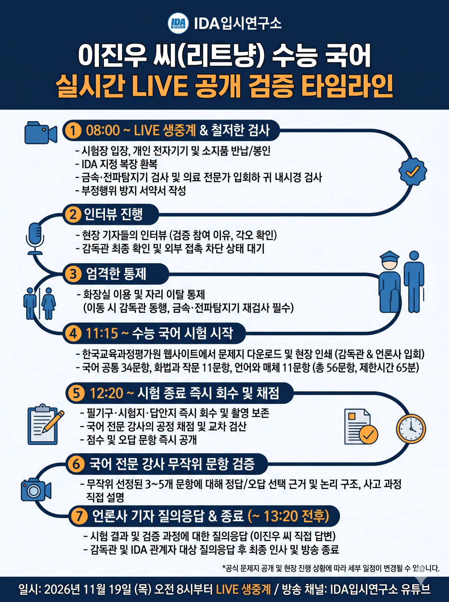

리트 만점자 검증 타임라인 정보.JPG
댓글
검증구조 ㄹㅇ 개빡쌔네
이걸 검증한다고 했다고? ㅋㅋㅋㅋㅋ
자기도 처음에는 이렇게 상황이 커질 줄 모르고 질렀을듯 ㅋㅋㅋ
근데 저리하면 원래 공부 잘하던 사람도 심리적 압박이 있어서 시험 잘 못칠거 같은데, 모르는 상태로 몰래 검증하면서 감독하는거라면 모를까
근데 잠깐 진행하는거봤는데 ㅈㄴ빡세게 똑바로준비하신듯 진행측. 홍보효과는 어느정도로될듯 노쇼라도 ㅠㅠ
불세출의 천재. 법학전문대학원 생긴 이래로 한번도 나오지 않은 2개 영역 동시 만점
이제부터 이 것이 대한민국 표준임?
치트각이 안나오긴 하네.
추측으론 대충 AI 전자 장비 가져와서 검증 하려 했는데 사태가 커지니까 빼박도 못하고 그냥 칩거하거나 해외로 뜬거같은데 물론 추측을 떠나서 교육자들 공부준비하는 사람들 저 사람보며 꿈키운 사람들 죄다 기만 한거 아니냐 한심하네 정말
수능 며칠 안남은 상태에서 검증하겠다고 외치면
아무도 제대로 준비해서 덤비지 못할줄 알았는데 저렇게 풀세팅하고 검증하자고 할지 몰랐던거지
그동안 수많은 시험도 잘 통과해왔으니 이번에도 어떻게든 검증을 뚫을 방법을 찾아서 오면 되겠지 하고 검증한다고 한거일듯. 도저히 방법이 없으니 런한거고
내가 진짜 만점자면 빤스만 입고 시험 쳤다 남자답게
저거 보자마자.튄거네 역시 전과자는 다르네
나가리여...